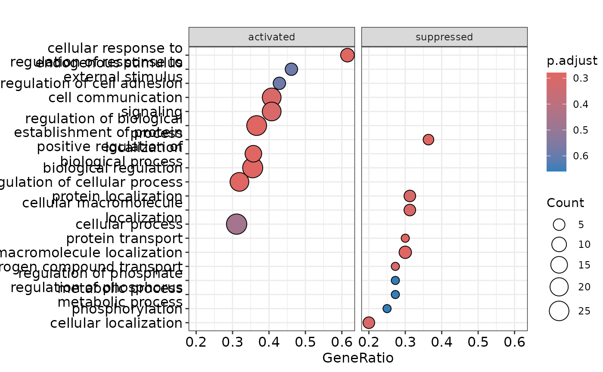
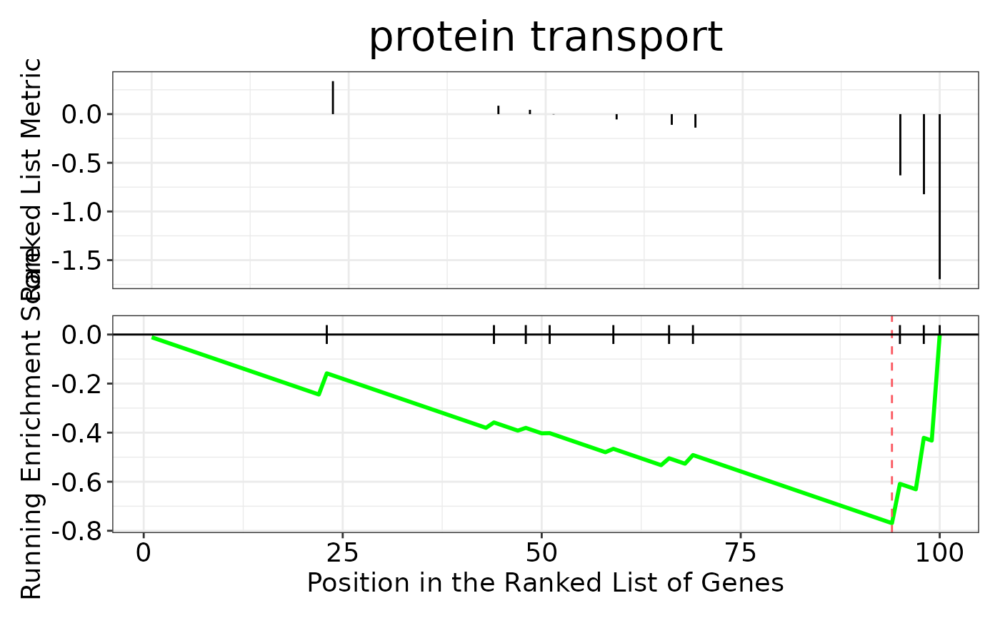
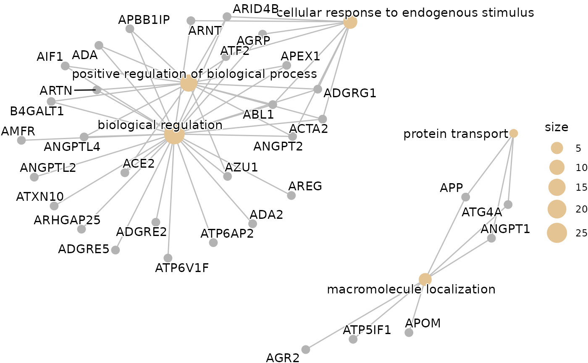
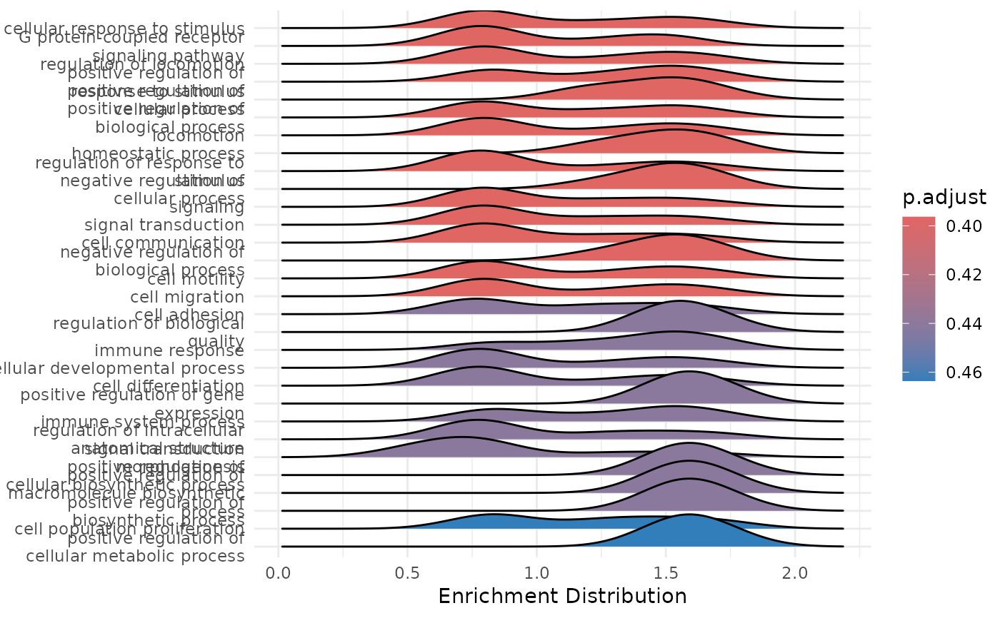

hd_plot_gsea() produces useful plots to visualize the results of the
gene set enrichment analysis.
Arguments
- enrichment
The enrichment results obtained from
hd_gsea().- seed
Seed for reproducibility. Default is 123.
Details
When KEGG database is used, a cnetplot is generated with ENTREZIDs instead of gene names. For GO and Reactome databases the ENTREZIDs are converted to gene names. If you get the "grid.Call(C_convert, x, as.integer(whatfrom), as.integer(whatto), : Viewport has zero dimension(s)" warning or error, try to increase the RStudio's viewer window size.
Examples
# Initialize an HDAnalyzeR object
hd_object <- hd_initialize(example_data, example_metadata)
# Run differential expression analysis for AML vs all others
de_results <- hd_de_limma(hd_object, case = "AML")
# Run GSEA with Reactome database
enrichment <- hd_gsea(de_results,
database = "GO",
ontology = "BP",
ranked_by = "logFC",
pval_lim = 0.9)
#> 'select()' returned 1:1 mapping between keys and columns
#> using 'fgsea' for GSEA analysis, please cite Korotkevich et al (2019).
#> preparing geneSet collections...
#> GSEA analysis...
#> leading edge analysis...
#> done...
# Remember that the data is artificial, this is why we use an absurdly high p-value cutoff
# Plot the results
enrichment <- hd_plot_gsea(enrichment)
# Access the plots
enrichment$dotplot

enrichment$gseaplot

enrichment$cnetplot

enrichment$ridgeplot
#> Picking joint bandwidth of 0.208
